Data Analysis using IBM SPSS Statistics
Slot 3 Web Notes
TEST OF DIFFERENCES
PURPOSE:
- To test whether a variable of interest differ significantly across 3 or more sub-groups of the population, or
- To test whether 2 or more subgroups of the population differ in terms of one or more variable of interest, or
- To test whether 2 or more variables are rated differently by the population.
WHEN:
- To establish whether two or more groups are statistically significantly different in terms of a particular variable of interest.
- To establish whether two or more variables are rated significantly different by the population. This is to establish definite ranking/ordering
TECHNIQUES:
- Parametric Techniques: t-test; paired t-test, 1-way ANOVA, 2-way ANOVA
- Non-Parametric Techniques: Mann-Whitney/Wilcoxon rank sum test; Wilcoxon signed rank sum test, Kruskal Wallis; Friedman test
a. Test of differences (2 means) Independent Samples
An independent samples t-test is undertaken when we want to compare the mean value of some continuous variable across two different groups. For example we would like to test whether intention to share information differs by gender, say you hypothesize that male have higher intention to share compared to females. The Gender variable is nominal (independent) whereas the criterion variable intention to share information is continuous (dependent) so we can use a t-test.
Analyze --> Compare Means --> Independent-Samples T Test
SPSS Output
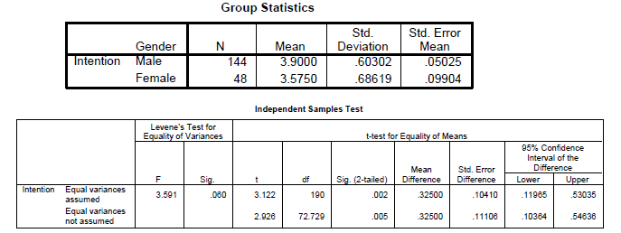
In Report APA Style
Table 6
Differences in the major variables by gender
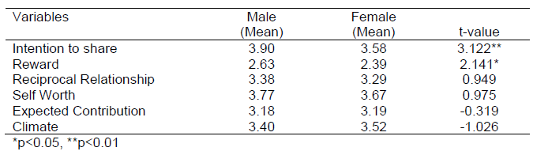
Effect Size
Effect size is to test if the statistical differences found is truly sufficient and not by chance. Although sometimes the difference is significant, it may be because of the large sample size where very small differences will be significant. Effect size calculates the strength of the association which indicates the relative magnitude of the differences between means. Tabachnick and Fidell (1996, p. 53) described this as “amount of total variance that is predictable from the knowledge of the levels of the independent variable”
One common measure of effect size is eta squared. Eta squared represents the proportion of variance of the dependent variable that is explained by the independent variable (Pallant, 2001). To interpret the strength we can follow the guidelines of Cohen (1988) which is as follows:
0.01 = small effect size
0.06 = moderate effect; and
0.14 = large effect size
Formula:
\[
Eta\ Squared\ =\ \frac{t^2}{t^2\ +\ (N_1\ +\ N_2\ -\ 2)}
\]
\[ Eta\ Squared\ =\ \frac{3.12^2}{3.12^2\ +\ (144\ +\ 48\ -\ 2)}\ =\ 0.049 \]
References
Cohen, J.W. (1988). Statistical power analysis for the behavioral sciences, Hillsdale, NJ: Lawrence Erlbaum Associates.
Pallant, J. (2001). SPSS Survival Manual: A step by step guide to data analysis using SPSS for Windows (Version 10), NSW, Australia: Allen & Unwin.
Tabachnick, B.G. & Fidell, L.S. (1996). Using Multivariate statistics, New York: Harper Collins.
Exercise 5:
Test whether the there are any non-response bias for the main variables by early and late responses.
b. Test of differences (2 means)- Dependent Samples
A paired t-test is undertaken when we want to compare the mean value of two continuous variables rated by the same person. Normally it is done as an experimental design like pre/post. Say you want to compare sales prior to an advertisement campaign and sales after the sales campaign to see how much sales has increased after the sales campaign. In this test the N remains the same whereas for the earlier independent samples t-test, the N becomes divided into 2 categories say male/female.
In our data we have intention to share rated by the respondent and also actual sharing rated by the same respondent as such we can compare to see if the intention and actual sharing differs significantly.
Analyze --> Compare Means --> Paired-Samples T Test
SPSS Output
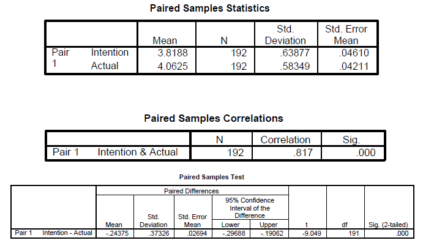
In Report APA Style
Table 7
Paired t-test Result
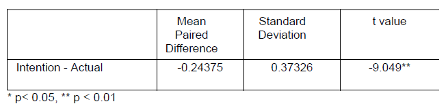
Formula:
\[ Eta\ Squared\ =\ \frac{t^2}{t^2\ +\ N\ -\ 1)} \]
\[ Eta\ Squared\ =\ \frac{(-9.05)^2}{(-9.05)^2\ +\ 30\ -\ 1}\ =\ 0.3 \]
c. Test of differences (2 means) - Independent Samples Nonparametric
The Mann-Whitney U test is the equivalent test for an independent samples t-test in nonparametric testing. It is undertaken when we want to compare the median value of some continuous variable across two different groups. For example we would like to test whether intention to share information differs by gender, say you hypothesize that male have higher intention to share compared to females. The Gender variable is nominal (independent) whereas the criterion variable intention to share information is continuous (dependent) and if we assume that the distribution is not normal or the sample size is small then we can resort to this test. What this test does is to first convert the continuous variable into ranks and then the mean ranks are compared. We lose some data in this process.
Analyze --> Nonparametric Test --> 2 Independent Samples
SPSS Output
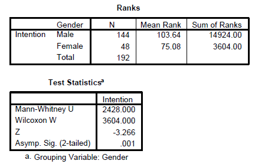
d. Test of differences (2 means)- Dependent Samples Nonparametric
The Wilcoxon Signed Rank Test is the nonparametric equivalent of the paired t-test is undertaken when we want to compare the median value of two continuous variables rated by the same person. Normally it is done as an experimental design like pre/post. Say you want to compare sales prior to an advertisement campaign and sales after the sales campaign to see how much sales has increased after the sales campaign. In this test the N remains the same whereas for the earlier independent samples t-test, the N becomes divided into 2 categories say male/female.
Analyze --> Nonparametric Test --> 2 Related samples
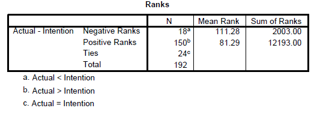
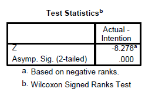
e. Test of differences (> 2 means) - Independent Samples
A one way ANOVA is used when we want to compare a continuous variable across more than 2 groups which are also called the “between-groups” test.
Analyze --> Compare Means --> One-Way ANOVA
SPSS Output
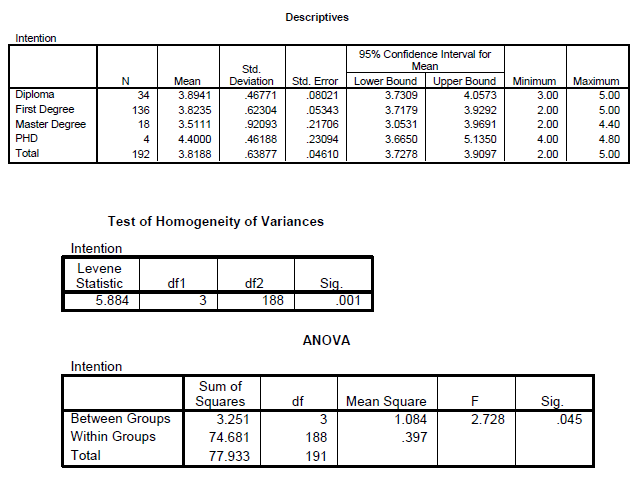
Post Hoc Tests: Homogeneous Subsets
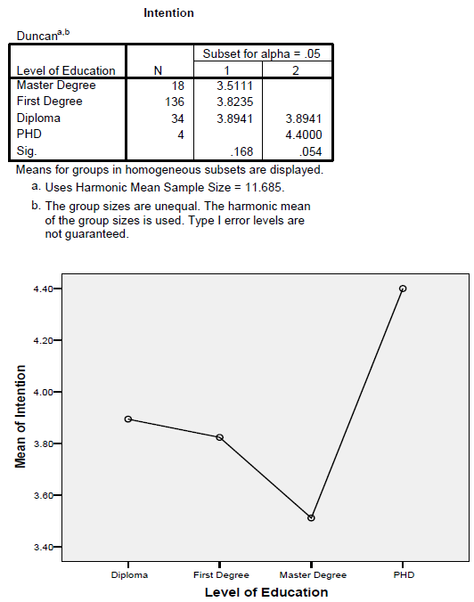
Effect Size
\(Formula\ =\ \frac{Sum\ of\ Squares\ Between\ Group}{Total\ Sum\ of\ Squares}\)
\(Effect\ Size\ = \frac{3.251}{77.933}\ =\ 0.04\)
In Report APA Style
Table 8
Differences in the Intention to share by Educational Level
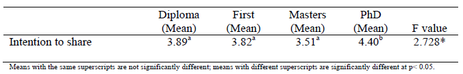
Exercises
Repeat the same anaysis for
Job PositionandAge Group.
f. Test of differences (> 2 means) - Independent Samples Nonparametric
The Kruskal-Wallis Test is the nonparametric equivalent test for the one way ANOVA. It allows us to compare the scores on a continuous variable across three or more groups. This is also called a “between groups” analysis.
Analyze --> Nonparametric Test --> k Independent Samples
SPSS Output
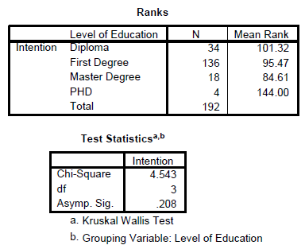
In Report APA Style
Table 9
Differences in the Intention to share by Educational Level
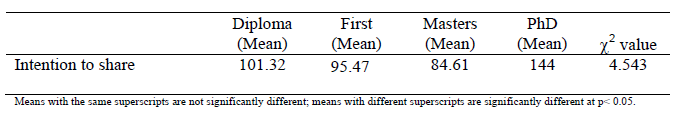
g. Test of differences (> 2 means) - Dependent Samples Nonparametric
The Friedman Test is the nonparametric equivalent of the one way repeated measure ANOVA. The idea is to compare say the ratings of several variables by the same respondent to see if there are differences. It is also called repeated measure within subjects test.
Analyze --> Nonparametric Test --> k Related Samples
SPSS Output
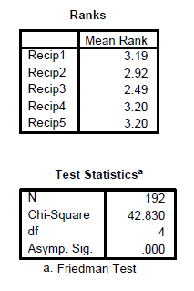
In Report APA Style Table 10
Friedman Two-Way ANOVA Result
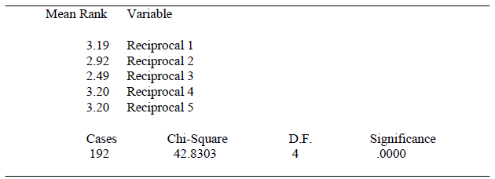
Test for Concordance
This is a test to compare if the there is agreement among the respondents in terms of their rating of each of the items. The Kendall’s W value will tell us if there is agreement or not. A higher value closer to 1 indicates there is strong agreement whereas a value closer to 0 indicates that there is no agreement at all.

Exercise 6:
Test whether the there are differences in terms of intention to share and actual sharing across position and department.